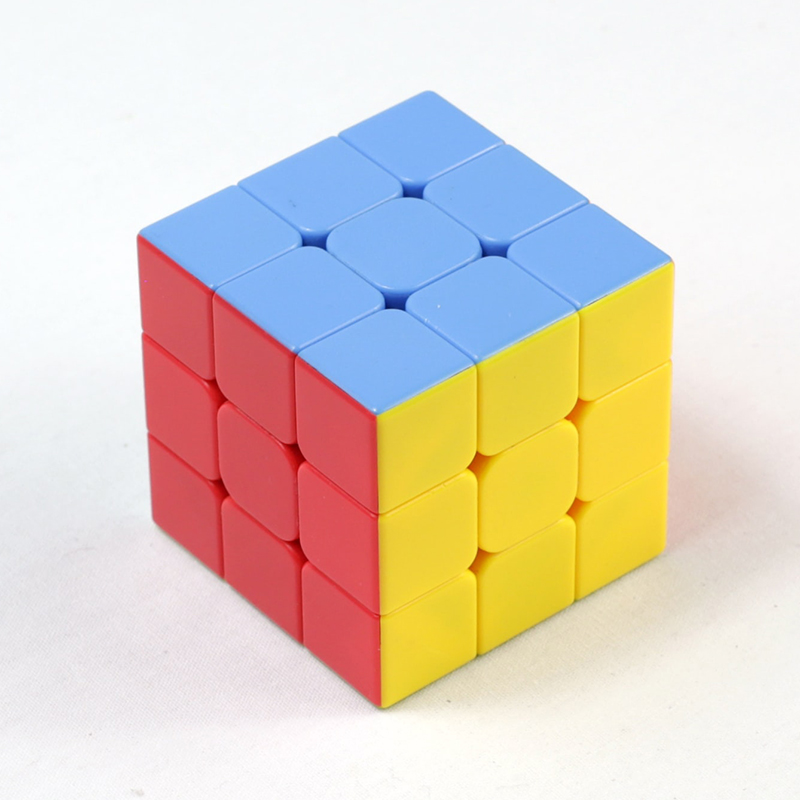

Search
ü߆ Introduction to AI ‚Äî I2AI_3
Problem-solving
Applications



Examples for search problems are (Russel and Norvig 2022, 87–88):
- Route-finding problems (e.g., car navigation, airline travel-planning)
- Touring problems (e.g., the traveling salesperson problem)
- VLSI layout problems (positioning millions of components and connections on a chip)
- Robot navigation (e.g., vacuum robots)
- Automatic assembly sequencing of complex objects (e.g., protein design)
Agents
Agents that plan ahead by considering a sequence of actions that form a path to a goal state are called problem-solving agents (Russel and Norvig 2022, 81)
- The computational process it undertakes is search
- The representations the agents use are atomic representations
- There are search algorithms for several environments
Here only simple environments are considered (episodic, single agent, fully observable, deterministic, static, discrete, and known).
–> We assume that information about the environment are given (e.g., a map)
There are also search algorithms for problems in partially observable, nondeterministic, unknown, and continuous environments (i.e., complex environments) like local search methods (e.g., hill-climbing search, local beam search, evolutionary algorithms). For details please see Russel and Norvig (2022).
Process
In simple environments, agents can follow a four-phase-problem-solving process (Russel and Norvig 2022, 81–82):
- Goal formulation: goals organize behavior by limiting the objectives and hence the actions to be considered
- Problem formulation: the agents devices a description of the states and actions necessary to reach the goal—an abstract model of the relevant part of the environment
- Search: the agent simulates sequences of actions in its model, searching until it finds a sequence that reaches the goal (i.e., the solution)
- Execution: the agent executes the actions in the solution, one at a time
In goal formulation, we decide which aspects of the world we are interested in, and which can be ignored or abstracted away. Then in problem formulation we decide how to manipulate the important aspects (and ignore the others). If we did problem formulation first we would not know what to include and what to leave out.
It can happen that there is a cycle of iterations between goal formulation, problem formulation, and problem-solving until one arrives at a sufficiently useful and efficient solution.
Search problem
Definition
A search problem can be defined formally as (Russel and Norvig 2022, 83):
- The state space: a set of possible states the environment can be in
- The initial state: the state that the agent starts
- Goal states: a singe goal state, a small set of alternative goal states, or a property that applies to many states (e.g, no dirt in any location)
- The actions available to the agent
ACTIONS(s)wheresis the current state - A transition model: describes what each action does.
RESULT(s,a)returns the state that results from doing actionain states. - An action cost function: gives the numeric cost of applying action
ain statesto reach states'(ACTION-COST(s,a,s') - A path: a sequence of actions
- A solution: a path from the initial state to the goal state
Modelling

Figure 1 depicts the search problem as model, the state space graph (Russel and Norvig 2022, 82–84):
- State space: cities (vertices, each state occurs only once)
- Initial state: Arad
- Goal state: Bucharest (goal test:
Is state == Bucharest?) - Actions: directed edges between the vertices (paths)
- Action costs: numbers on the paths
The model is an abstract mathematical description, here a simple atomic state description. The model is an abstraction as it ignores many details of the reality (e.g., weather and scenery).
A good problem formulation has the right level of detail (i.e., an appropriate level of abstraction).
The choice of a good abstraction involves removing as much detail as possible while retaining validity and ensuring that the abstract actions are easy to carry out. An abstraction is valid if any abstract solution can be elaborated into a solution in the more detailed world.
Search tree
Structure

Figure 2 visualizes the first few steps in finding a path from Arad (initial state) to Bucharest (goal).
- The root node of the search tree is the initial state
s(Arad) - The available
ACTIONS(s), using theRESULTS(s,a)function are considered - New nodes, called child nodes or successor nodes are generated for each resulting states (i.e., the root node is expanded)
- Each child node has Arad as its parent node
- The child node to be considered next needs to be selected (strategies see below)
In Figure 2, nodes that have been expanded are white with bold letters; nodes on the frontier that have been generated but not yet expanded are in white and regular letters; the set of states corresponding to these two types of nodes are said to have been reached. Nodes that could be generated next are shown in faint dashed lines.
A search tree is a “what if” tree of plans and their outcomes.
- The start state is the root node,
- children correspond to successors,
- nodes show states, but correspond to PLANS that achieve those states
There are lots of repeated structure in the search tree. Thus, for most problems, the whole tree can never be actually built. In practice, both state space graphs and search trees are constructed on demand and as little as possible (Russel and Norvig 2022).
Search
Algorithms
Search algorithms take a search problem as input and return a solution, or an indication of failure (Russel and Norvig 2022, 89).
- They superimpose a search tree over the state-space graph,
- form various paths from the initial state, and
- try to find a path that reaches a goal state.
They can implement
- uninformed search methods, which only have access to the problem definition
- informed search methods, which have access to a heuristic function that estimates the costs of a solution (e.g., straight-line distance in route-finding problems)
Uniformed search
- Breadth-first search: expands the shallowest nodes first
- complete, optimal for unit action costs
- exponential space complexity
- FIFO queue
- Uniform-cost search: expands the node with the lowest path costs
- complete, optimal for general action costs
- priority queue using cumulative cost
- Depth-first search: expands the deepest unexpanded node first
- neither complete nor optimal
- linear space complexity, a depth bound can be added
- LIFO queue
Three types of ques are used in search algorithms (Russel and Norvig 2022, 92):
- A priority queue first pops the node with the minimum costs according to some evaluation function, f.
- A LIFO queue or first-in-first-out queue first pops the node that was added to the queue first.
- A LIFO queue or last-in-first-out queue (also known as a stack) pops first the most recently added node.
The performance of problem-solving algorithms can be evaluated in four ways (Russel and Norvig 2022, 93):
- Completeness: Is the algorithm guaranteed to find a solution when there is one, and to correctly report failure when there is not?
- Cost optimality: Does it find a solution with the lowest path cost of all solutions?
- Time complexity: How long does it take to find a solution (e.g., measured in seconds or by the number of states and actions considered)?
- Space complexity: How much memory is needed to perform the search?
Unknown environments
Online search
The agents considered so far use offline search algorithm. They compute a complete solution before taking their first action.
Online search agents interleaves computation and action:
- Takes action,
- observes the environment, and
- computes the next action
These agents can discover successor only for a state that is occupied or that is learned (i.e., contained in a map created online)
Online search is a good idea in dynamic or semi-dynamic environments.
Summary
Search operates over models of the world (which might be observed online)
- Agents do not try all possible plans
- Planning is all “in simulation”
- Search is only as good as the models are
✏️ Exercises
I2AI_3 E1
Explain why problem formulation must follow goal formulation.
I2AI_3 E2
Give a complete problem formulation for each of the following problems. Choose a formulation that is precise enough to be implemented.
- There are six glass boxes in a row, each with a lock. Each of the first five boxes holds a key unlocking the next box in line; the last box holds a banana. You have the key to the first box, and you want the banana.
- There is an n x n grid of squares, each square initially being either unpainted floor or a bottomless pit. You start standing on an unpainted floor square, and can either paint the square under you or move into an adjacent unpainted floor square. You want the whole floor painted.
I2AI_3 E3
Your goal is to navigate a robot out of a maze. The robot starts in the center of the maze facing north. You can turn the robot to face north, east, south, or west. You can direct the robot to move forward a certain distance, although it will stop before hitting a wall.
- Formulate this problem. How large is the state space?
- In navigating a maze, the only place we need to turn is at the intersection of two or more corridors. Reformulate this problem using this observation. How large is the state space now?
- From each point in the maze, we can move in any of the four directions until we reach a turning point, and this is the only action we need to do. Reformulate the problem using these actions. Do we need to keep track of the robot’s orientation now?
- In our initial description of the problem we already abstracted from the real world. Name three such simplifications we made.